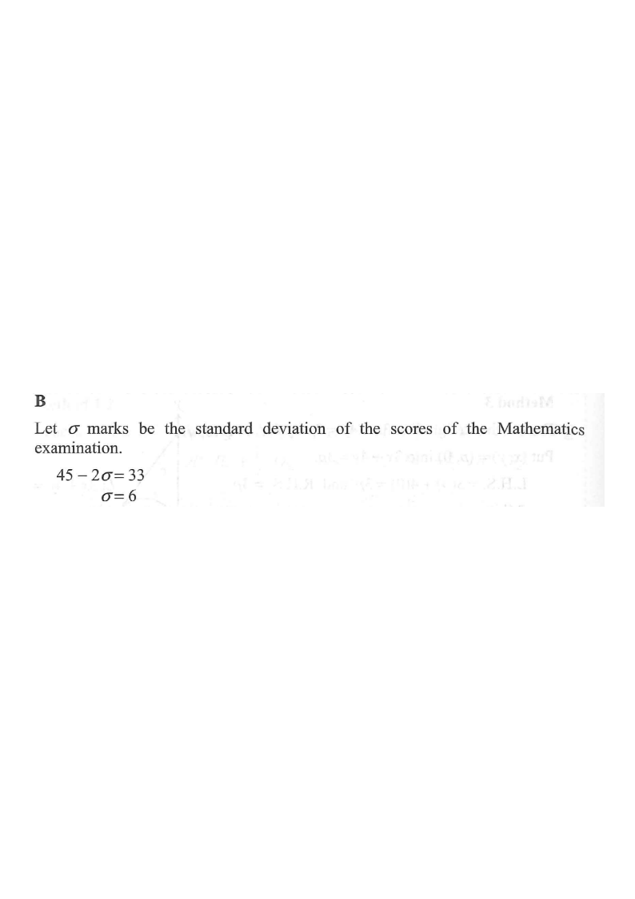

The standard score of Tom in a Mathematics examination is \(-2\). If the score of Tom in the Mathematics examination is \(33\) marks and the mean of the scores of the Mathematics examination is \(45\) marks, then the standard deviation of the scores of the Mathematics examination is

For a score \(x\), with mean \(\mu\) and standard deviation \(\sigma\):
\[z=\frac{x-\mu}{\sigma}\]
Standard score of Tom: \(z=-2\)
Tom's score: \(x=33\)
Mean of the examination: \(\mu=45\)
Score \(=45-2\times 6=45-12=33\). ✓ Matches Tom's given score.
Question. In an examination the mean mark is \(51\). Tom scored \(36\) marks and his standard score is \(-1.5\). Find the standard deviation of the marks.